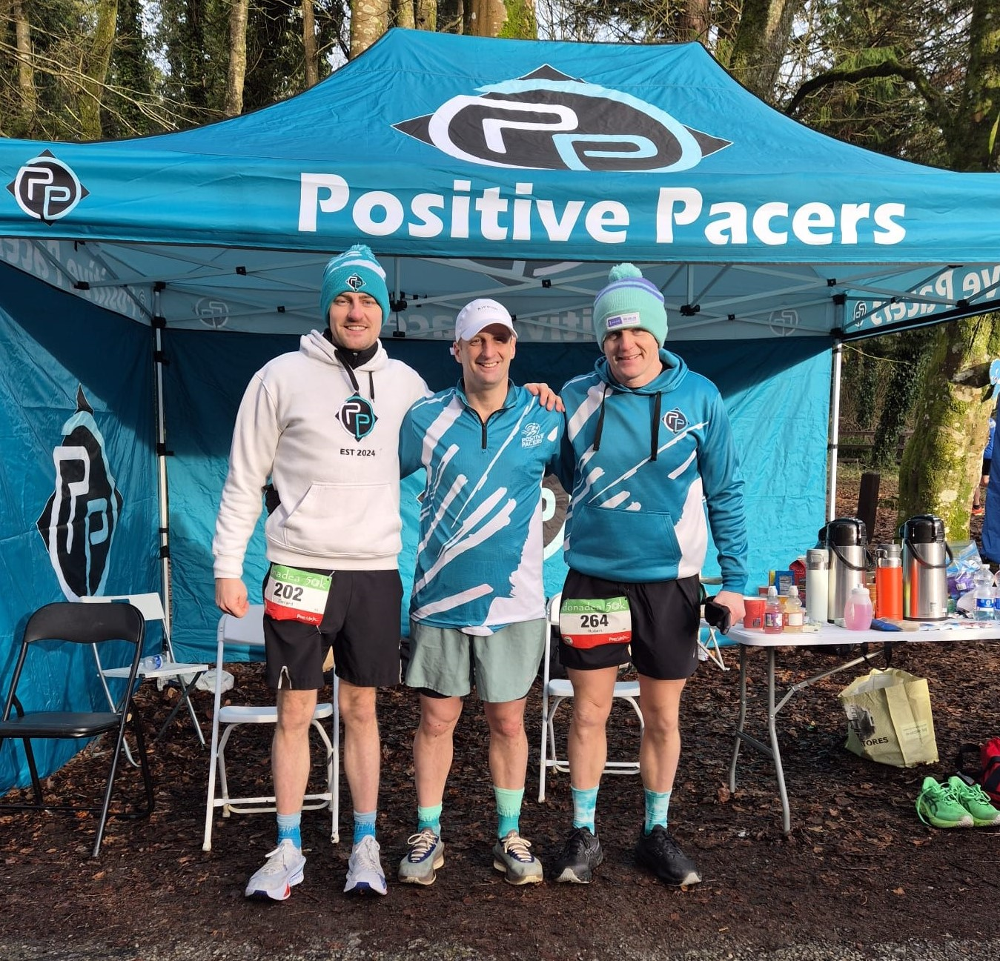
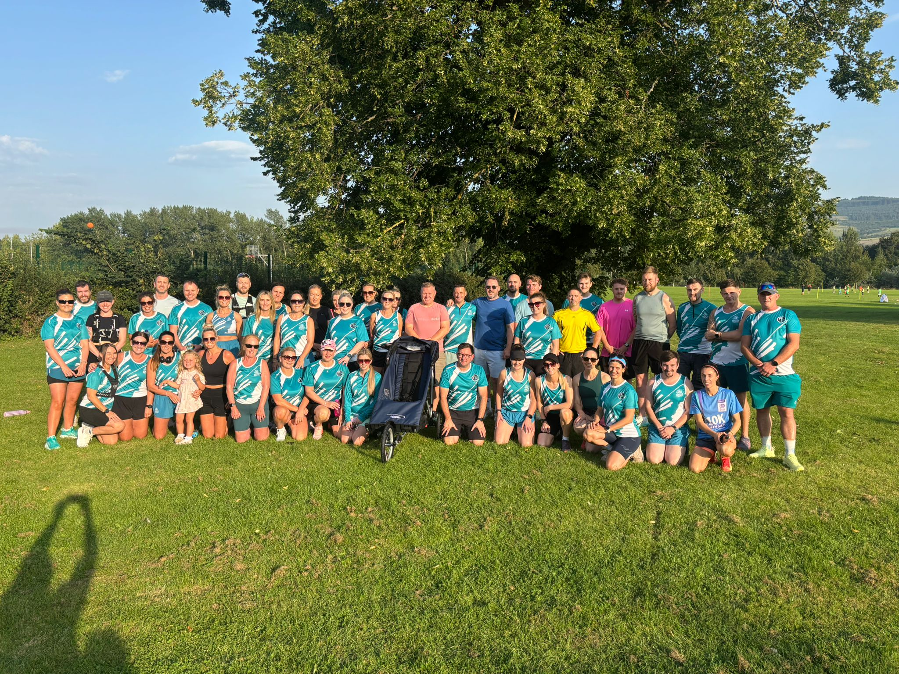
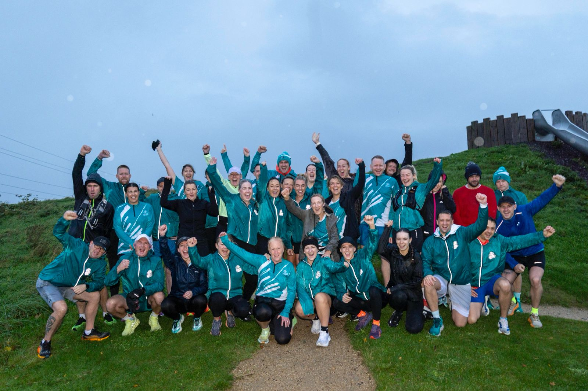
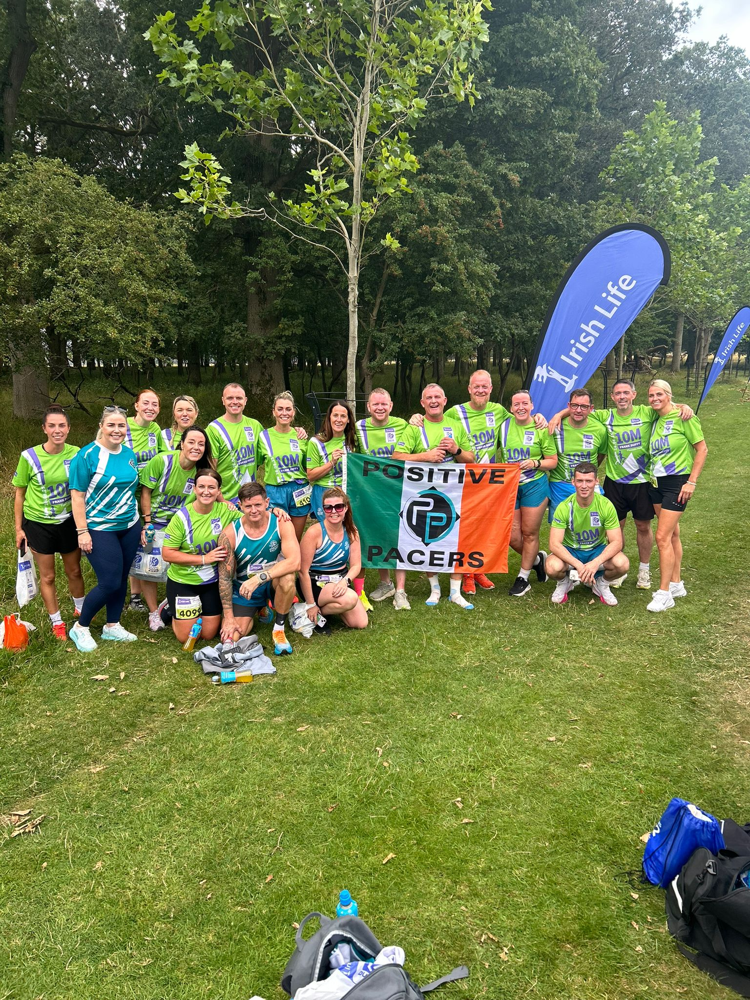
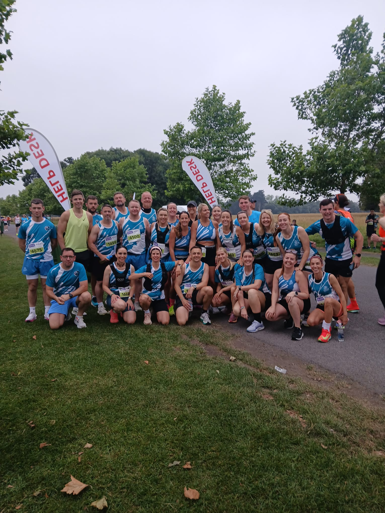
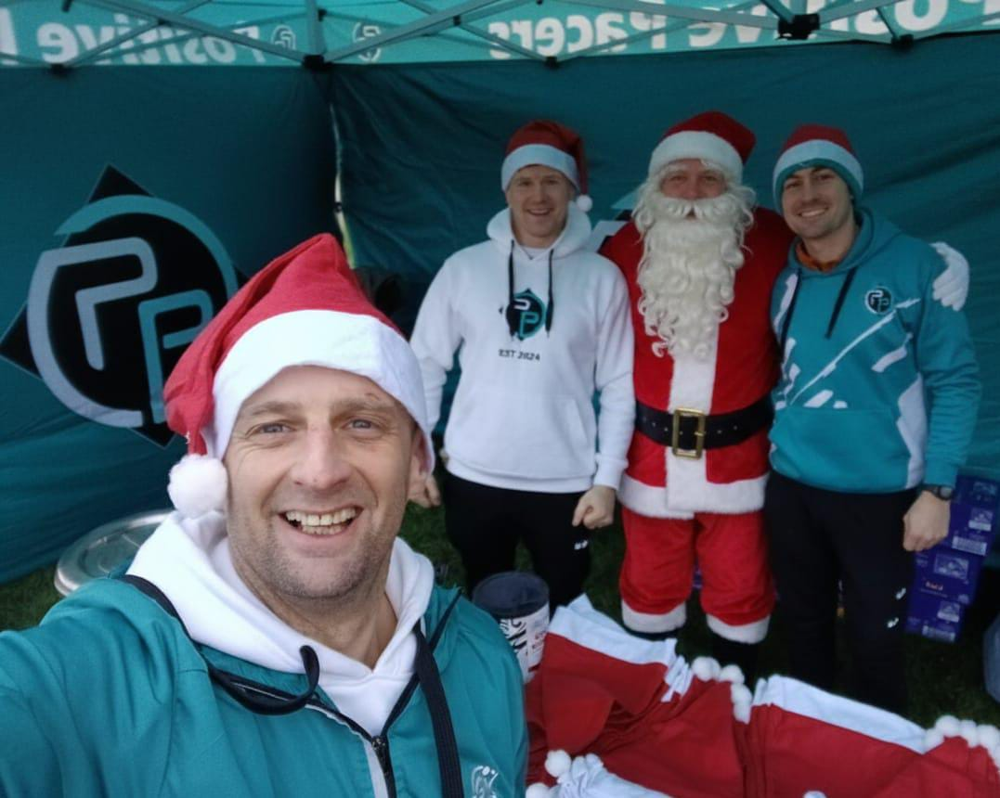
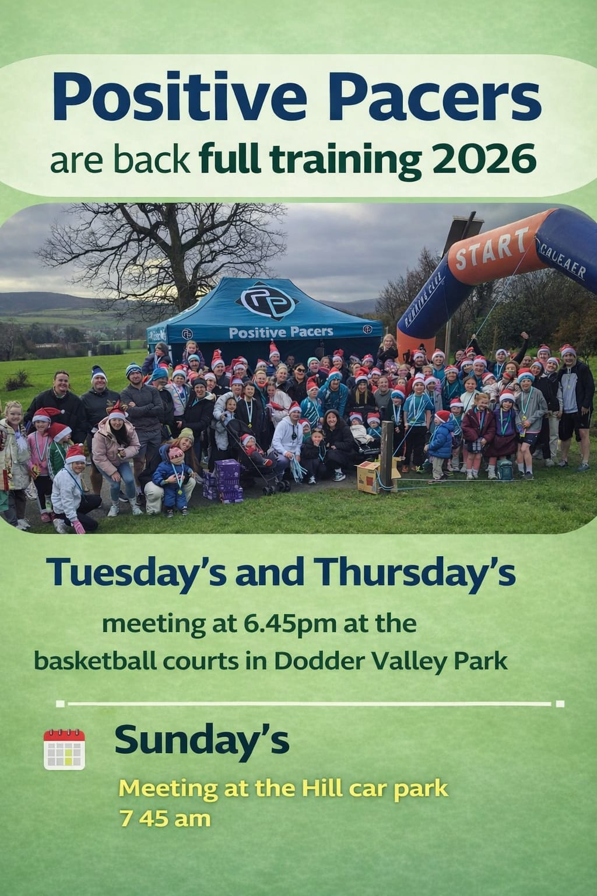

Lace up with our community and achieve your goals.
Positive Pacers: Where every run is a step forward.
Positive Pacers: Where every run is a step forward.
Welcome to Positive Pacers Running Club! Established in 2024, we're a friendly and inclusive club dedicated to bringing the joy of running to everyone, from absolute beginners to seasoned athletes. Our mission is to foster a supportive community where members can achieve their running goals, stay active, and build lasting friendships.
We believe that running is for everyone, regardless of pace or experience. Our 'Couch to 5km' program, which successfully launched in February 2024, exemplifies our commitment to making running accessible. We've created a welcoming environment where newcomers can comfortably take their first steps, supported by experienced runners and coaches. We pride ourselves on our positive atmosphere, encouragement, and the genuine friendships that blossom on our runs.
Join us for our regular club runs! We meet every Tuesday and Thursday evenings. Our main meeting point is Dodder Valley Park, providing scenic routes for all our sessions. Additionally, we organize a special Sunday long run from the park, perfect for those looking to build endurance or explore further afield. Check our Events page for specific meeting times and route details.
Check our instagram page for updates here: "instagram.com/positive_pacers/ "

Group runs throughout the week and support at races & events. We also offer 1 to 1 Coaching & Physio subject to places and times.

Group runs 3 times per week, set times.
A race each month with support.
Personalised coaching with weekly running plans, check in's, guidance






The Couch to 5km program provides an excellent foundation for participants to build upon and takes people from being sedentary to regularly active in their day to day lives.
Never in my life did I think I could run 1km nevermind a 5k! Your guidance and support has been what got us all past finish line today.
Thanks to the coaches and fellow racers. Everyone pushed each other and the support, encouragement and overall banter was great from week 1-8. Those bitter, rainy, windy evenings were all worth it for this morning’s event. Up the Positive Pacers!!
Thanks so much Dara, Rob and Darren. Great few weeks and a great morning. I really enjoyed it and I’m looking forward to joining the club.
The Positive Pacers Running Club is growing stronger every day! We aim to host multiple Couch to 5km programs annually and are planning new initiatives to keep our members motivated and engaged throughout the year. Whether you're training for your first 5k, a marathon, or simply looking for a friendly group to run with, Positive Pacers is the place for you. Join us and discover the positive difference running can make!
Email Me: GETEMAIL
Call me: +123456